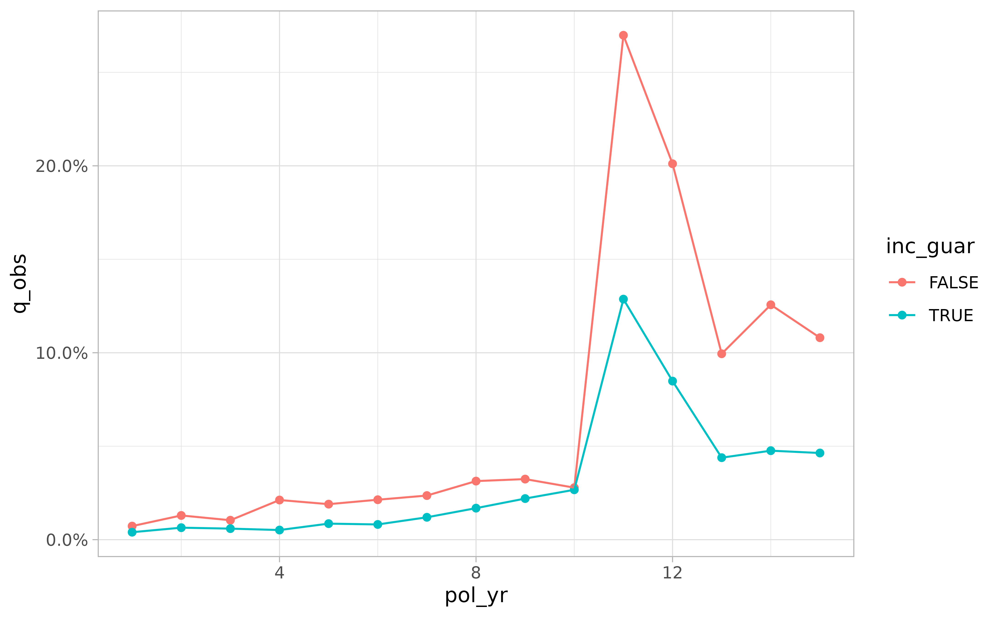

Simulated data set
The actxps package includes a data frame containing simulated census data for a theoretical deferred annuity product with an optional guaranteed income rider. The grain of this data is one row per policy.
library(actxps)
library(dplyr)
census_dat
#> # A tibble: 20,000 × 11
#> pol_num status issue_date inc_g…¹ qual age product gender wd_age pol_val
#> <int> <fct> <date> <lgl> <lgl> <int> <fct> <fct> <int> <dbl>
#> 1 1 Active 2014-12-17 TRUE FALSE 56 b F 77 370
#> 2 2 Surrend… 2007-09-24 FALSE FALSE 71 a F 71 708
#> 3 3 Active 2012-10-06 FALSE TRUE 62 b F 63 466
#> 4 4 Surrend… 2005-06-27 TRUE TRUE 62 c M 62 485
#> 5 5 Active 2019-11-22 FALSE FALSE 62 c F 67 978
#> 6 6 Active 2018-09-01 FALSE TRUE 77 a F 77 1288
#> 7 7 Active 2011-07-23 TRUE TRUE 63 a M 65 1046
#> 8 8 Active 2005-11-08 TRUE TRUE 58 a M 58 1956
#> 9 9 Active 2010-09-19 FALSE FALSE 53 c M 64 2165
#> 10 10 Active 2012-05-25 TRUE FALSE 61 b M 73 609
#> # … with 19,990 more rows, 1 more variable: term_date <date>, and abbreviated
#> # variable name ¹inc_guarThe data includes 3 policy statuses: Active, Death, and Surrender.
(status_counts <- table(census_dat$status))
#>
#> Active Death Surrender
#> 15212 1816 2972Let’s assume we’re interested in calculating the probability of surrender over one policy year. We cannot simply calculate the proportion of policies in a surrendered status as this does not represent an annualized surrender rate.
# incorrect
prop.table(status_counts)
#>
#> Active Death Surrender
#> 0.7606 0.0908 0.1486Creating exposed data
In order to calculate annual surrender rates, we need to break each policy into multiple records. There should be one row per policy per year.
The expose() family of functions is used to perform this
transformation.
exposed_data <- expose(census_dat, end_date = "2019-12-31",
target_status = "Surrender")
exposed_data
#> Exposure data
#>
#> Exposure type: policy_year
#> Target status: Surrender
#> Study range: 1900-01-01 to 2019-12-31
#>
#> # A tibble: 141,233 × 14
#> pol_num status issue_date inc_guar qual age product gender wd_age pol_val
#> * <int> <fct> <date> <lgl> <lgl> <int> <fct> <fct> <int> <dbl>
#> 1 1 Active 2014-12-17 TRUE FALSE 56 b F 77 370
#> 2 1 Active 2014-12-17 TRUE FALSE 56 b F 77 370
#> 3 1 Active 2014-12-17 TRUE FALSE 56 b F 77 370
#> 4 1 Active 2014-12-17 TRUE FALSE 56 b F 77 370
#> 5 1 Active 2014-12-17 TRUE FALSE 56 b F 77 370
#> 6 1 Active 2014-12-17 TRUE FALSE 56 b F 77 370
#> 7 2 Active 2007-09-24 FALSE FALSE 71 a F 71 708
#> 8 2 Active 2007-09-24 FALSE FALSE 71 a F 71 708
#> 9 2 Active 2007-09-24 FALSE FALSE 71 a F 71 708
#> 10 2 Active 2007-09-24 FALSE FALSE 71 a F 71 708
#> # … with 141,223 more rows, and 4 more variables: term_date <date>,
#> # pol_yr <int>, pol_date_yr <date>, exposure <dbl>These functions create exposed_df objects, which are a
type of data frame with some additional attributes related to the
experience study.
Now that the data has been “exposed” by policy year, the observed annual surrender probability can be calculated as:
As a default, the expose() function calculates exposures
by policy year. This can also be accomplished with the function
expose_py(). Other implementations of expose()
include:
-
expose_cy= exposures by calendar year -
expose_cq= exposures by calendar quarter -
expose_cm= exposures by calendar month -
expose_cw= exposures by calendar week -
expose_pq= exposures by policy quarter -
expose_pm= exposures by policy month -
expose_pw= exposures by policy week
See vignette("exposures") for further details on
exposure calculations.
Experience study summary function
The exp_stats() function creates a summary of observed
experience data. The output of this function is an exp_df
object.
exp_stats(exposed_data)
#> Experience study results
#>
#> Groups:
#> Target status: Surrender
#> Study range: 1900-01-01 to 2019-12-31
#>
#> # A tibble: 1 × 4
#> n_claims claims exposure q_obs
#> * <int> <int> <dbl> <dbl>
#> 1 2868 2868 132616. 0.0216See vignette("exp_summary") for further details on
exposure calculations.
Grouped experience data
If the data frame passed into exp_stats() is grouped
using dplyr::group_by(), the resulting output will contain
one record for each unique group.
library(dplyr)
exp_res <- exposed_data |>
group_by(pol_yr, inc_guar) |>
exp_stats()
exp_res
#> Experience study results
#>
#> Groups: pol_yr, inc_guar
#> Target status: Surrender
#> Study range: 1900-01-01 to 2019-12-31
#>
#> # A tibble: 30 × 6
#> pol_yr inc_guar n_claims claims exposure q_obs
#> * <int> <lgl> <int> <int> <dbl> <dbl>
#> 1 1 FALSE 56 56 7720. 0.00725
#> 2 1 TRUE 46 46 11532. 0.00399
#> 3 2 FALSE 92 92 7101. 0.0130
#> 4 2 TRUE 67 67 10609. 0.00632
#> 5 3 FALSE 67 67 6445. 0.0104
#> 6 3 TRUE 57 57 9648. 0.00591
#> 7 4 FALSE 123 123 5797. 0.0212
#> 8 4 TRUE 45 45 8735. 0.00515
#> 9 5 FALSE 97 97 5106. 0.0190
#> 10 5 TRUE 67 67 7810. 0.00858
#> # … with 20 more rowsActual-to-expected rates
To derive actual-to-expected rates, first attach one or more columns
of expected termination rates to the exposure data. Then, pass these
column names to the expected argument of
exp_stats().
expected_table <- c(seq(0.005, 0.03, length.out = 10), 0.2, 0.15, rep(0.05, 3))
# using 2 different expected termination rates
exposed_data <- exposed_data |>
mutate(expected_1 = expected_table[pol_yr],
expected_2 = ifelse(exposed_data$inc_guar, 0.015, 0.03))
exp_res <- exposed_data |>
group_by(pol_yr, inc_guar) |>
exp_stats(expected = c("expected_1", "expected_2"))
exp_res
#> Experience study results
#>
#> Groups: pol_yr, inc_guar
#> Target status: Surrender
#> Study range: 1900-01-01 to 2019-12-31
#> Expected values: expected_1, expected_2
#>
#> # A tibble: 30 × 10
#> pol_yr inc_g…¹ n_cla…² claims expos…³ q_obs expec…⁴ expec…⁵ ae_ex…⁶ ae_ex…⁷
#> * <int> <lgl> <int> <int> <dbl> <dbl> <dbl> <dbl> <dbl> <dbl>
#> 1 1 FALSE 56 56 7720. 0.00725 0.005 0.03 1.45 0.242
#> 2 1 TRUE 46 46 11532. 0.00399 0.005 0.015 0.798 0.266
#> 3 2 FALSE 92 92 7101. 0.0130 0.00778 0.03 1.67 0.432
#> 4 2 TRUE 67 67 10609. 0.00632 0.00778 0.015 0.812 0.421
#> 5 3 FALSE 67 67 6445. 0.0104 0.0106 0.03 0.985 0.347
#> 6 3 TRUE 57 57 9648. 0.00591 0.0106 0.015 0.560 0.394
#> 7 4 FALSE 123 123 5797. 0.0212 0.0133 0.03 1.59 0.707
#> 8 4 TRUE 45 45 8735. 0.00515 0.0133 0.015 0.386 0.343
#> 9 5 FALSE 97 97 5106. 0.0190 0.0161 0.03 1.18 0.633
#> 10 5 TRUE 67 67 7810. 0.00858 0.0161 0.015 0.532 0.572
#> # … with 20 more rows, and abbreviated variable names ¹inc_guar, ²n_claims,
#> # ³exposure, ⁴expected_1, ⁵expected_2, ⁶ae_expected_1, ⁷ae_expected_2
autoplot() and autotable()
The autoplot() and autotable() functions
can be used to create visualizations and summary tables.
library(ggplot2)
.colors <- c("#eb15e4", "#7515eb")
theme_set(theme_light())
exp_res |>
autoplot() +
scale_color_manual(values = .colors) +
labs(title = "Observed Surrender Rates by Policy Year and Income Guarantee Presence")
autotable(exp_res)
summary()
Calling the summary() function on an exp_df
object re-summarizes experience results. This also produces an
exp_df object.
summary(exp_res)
#> Experience study results
#>
#> Groups:
#> Target status: Surrender
#> Study range: 1900-01-01 to 2019-12-31
#> Expected values: expected_1, expected_2
#>
#> # A tibble: 1 × 8
#> n_claims claims exposure q_obs expected_1 expected_2 ae_expected_1 ae_expec…¹
#> * <int> <int> <dbl> <dbl> <dbl> <dbl> <dbl> <dbl>
#> 1 2868 2868 132616. 0.0216 0.0242 0.0209 0.892 1.04
#> # … with abbreviated variable name ¹ae_expected_2If additional variables are passed to ..., these
variables become groups in the re-summarized exp_df
object.
summary(exp_res, inc_guar)
#> Experience study results
#>
#> Groups: inc_guar
#> Target status: Surrender
#> Study range: 1900-01-01 to 2019-12-31
#> Expected values: expected_1, expected_2
#>
#> # A tibble: 2 × 9
#> inc_guar n_claims claims exposure q_obs expected_1 expected_2 ae_ex…¹ ae_ex…²
#> * <lgl> <int> <int> <dbl> <dbl> <dbl> <dbl> <dbl> <dbl>
#> 1 FALSE 1601 1601 52115. 0.0307 0.0235 0.03 1.31 1.02
#> 2 TRUE 1267 1267 80501. 0.0157 0.0247 0.015 0.636 1.05
#> # … with abbreviated variable names ¹ae_expected_1, ²ae_expected_2Shiny App
Passing an exposed_df object to the
exp_shiny() function launches a shiny app that enables
interactive exploration of experience data.
exp_shiny(exposed_data)